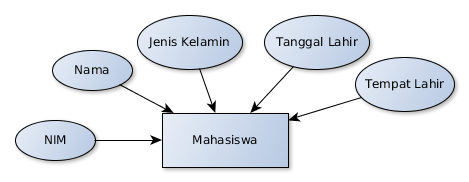
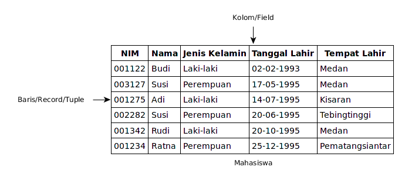
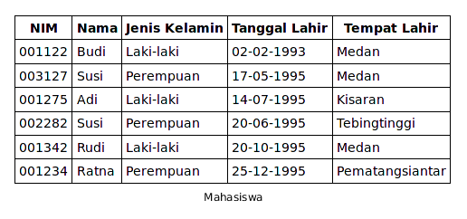
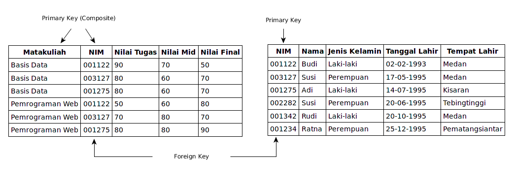

Setiap relation terdiri dari kolom (field) dan baris (record)
Setiap entitypada model ER menjadi relation pada model Relasional
Atribut entity pada model ER menjadi kolom (field) pada model relasional
Relation
Terdiri dari relation schema dan relation instance
Relation schema terdiri dari nama relasi, judul field dan tipe/domain dari masing-masing field
Relation instance merupakan kumpulan baris yang disebut tuple/record
Contoh relation schema: Mahasiswa(NIM: string, nama: string, jenis kelamin: string, tanggal lahir: date, tempat lahir: string, alamat: string)
Model ER to Model Relasional

Model ER

Model Relasional
Integrity Constraint
Kualitas data di dalam database tergantung pada integrita data yang disimpan
Untuk menjaga integritas data, perlu didefinisikan constraint/batasan terhadap data yang disimpan
Tipe/domain field pada schema relasi merupakan salah satu bentuk constraint yang membatasi data yang bisa dimasukkan ke dalam kolom tertentu.
Mis: tidak bisa memasukkan data string ke kolom bertipe date/integer dll.
Field Data Type
Menentukan jenis data yang bisa diisikan pada kolom tertentu di setiap record
Tipe data umum:
Character: char, varchar, text
Numeric: integer, bigint, smallint, real, double
Date/Time: date, time, timestamp
Boolean: true atau false
Masing-masing DBMS memiliki tipe data khusus. Cth: Enumerated, Geometric, JSON, dll.
Key Constraints
Memberikan batasan terhadap instance relation (tuple/record).
Tidak memperbolehkan tuple/record yang memiliki data yang sama untuk keseluruhan field/kolom
Dengan kata lain, setiap tuple/record harus bersifat unik, tujuannya adalah untuk mengidentifikasi masing-masing tuple/record
Kumpulan field yang mengidentifikasi record secara unik disebut candidate key
Key Constraints

Key Constraints: Primary Key
Dari pilihan candidate key yang tersedia, dipilih 1 key yang nantinya akan menjadi primary key
Primary key menjadi field/atribut yang digunakan untuk mengidentifikasi masing-masing record
Primary key otomatis akan mendapatkan constraints unique (tidak boleh memiliki nilai yang sama untuk seluruh record) dan
akan di-index oleh DBMS untuk mempercepat pencarian data
Dua atau lebih kolom yang dijadikan primary key disebut composite key
Key Constraints: Foreign Key
Kolom yang menjadi penghubung antar satu tabel dengan tabel lainnya disebut: foreign key
Mis. Tabel Mahasiswa yang terhubung dengan Tabel Nilai (menyimpan informasi nilai Mahasiswa tersebut untuk Matakuliah yang diikuti)

Key Constraints: Foreign Key
Tabel yang menyimpan kolom foreign key disebut child table
Tabel yang menyimpan kolom primary key disebut parent table
Record pada child table bergantung pada record di parent table. Contoh: DBMS tidak memperbolehkan penambahan/update record pada tabel Nilai yang NIM nya tidak ada di tabel Mahasiswa